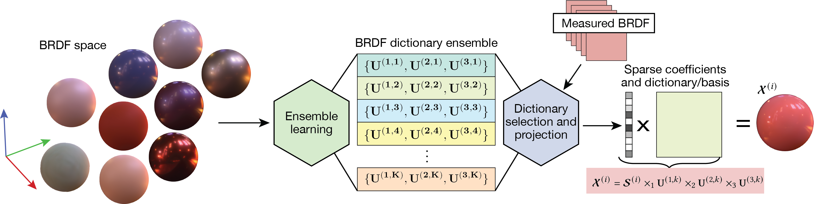

Our proposed pipeline.

Second image description.

Third image description.

This paper presents a novel sparse non-parametric Bidirectional Reflectance Distribution Function (BRDF) model derived using a machine learning approach to represent the space of possible BRDFs using a set of multidimensional sub-spaces, or dictionaries. By training the dictionaries under a sparsity constraint, the model guarantees high-quality representations with minimal storage requirements and an inherent clustering of the BDRF-space. The model can be trained once and then reused to represent a wide variety of measured BRDFs. Moreover, the proposed method is flexible to incorporate new unobserved data sets, parameterizations, and transformations. In addition, we show that any two, or more, BRDFs can be smoothly interpolated in the coefficient space of the model rather than the significantly higher-dimensional BRDF space. The proposed sparse BRDF model is evaluated using the MERL, DTU, and RGL-EPFL BRDF databases. Experimental results show that the proposed approach results in about 9.75dB higher signal-to-noise ratio on average for rendered images as compared to current state-of-the-art models.
@article{TongbuasirilaiTOG2022,
author = {Tongbuasirilai, Tanaboon and Unger, Jonas and Guillemot, Christine and Miandji, Ehsan},
title = {A Sparse Non-Parametric BRDF Model},
year = {2022},
issue_date = {October 2022},
publisher = {Association for Computing Machinery},
address = {New York, NY, USA},
volume = {41},
number = {5},
issn = {0730-0301},
url = {https://doi.org/10.1145/3533427},
doi = {10.1145/3533427},
journal = {ACM Trans. Graph.},
month = {oct},
articleno = {181},
numpages = {18},
keywords = {BRDF interpolation, reflectance and shading models, machine learning, Rendering, non-parametric BRDF model, dictionary learning}
}